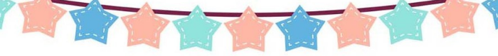
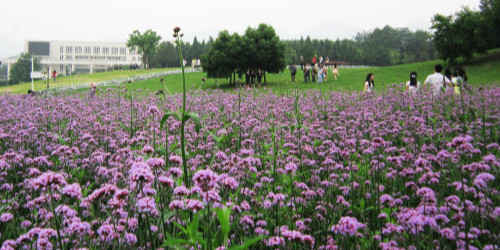
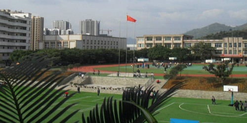
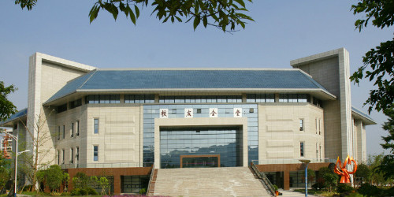

重师情人坡
小情侣之间谈恋爱去的地方，开满了许多马鞭草，马鞭草象征着宗教神圣仪式 ，和平善良纯洁，使人拥有美好的向往，花季大约在五六月，有许多人写生，非常漂亮
重师图书馆
重师最高的建筑，历代学长学姐，奋斗的血泪史的地方，里面有许许多多的书， 并且能够借一学期，里面的环境干净，整洁，气氛安静，适合安安静静的看书学习。
泛月桥
以前重师地理环境一直是一个圈状，同学们每天绕着圈跑，做事非常不方便，而且05年的时候老师晚上吃完饭散步过后，走一圈就花很长时间，所以学校采用汉白玉修了一座桥
大学城黄昏
重庆大学城内的各个校园都很美，最大气当然是重庆大学啦，既有工科学校的严谨之美，兼具文科学校的优雅景致;四川美术学院一定要去，曲径通幽...

我的母校
重庆市进盛实验中学创建于1945年。经过艰苦卓绝的八年抗战，中华民族取得了伟大胜利。为抗战作出卓越贡献的万盛东林矿业公司

校友会堂
大学许多重要的会议，以及汇报演出都是在这里举行的。拥有两层观众席，以及投射灯 光。后方为ppt，已经评论区，非常酷炫